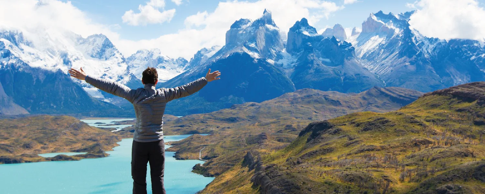

Grandioso territorio
Volver a un destino conocido no significa volver a lo mismo. En AONIKENK exploramos la Patagonia para descubrir nuevas formas de recorrerla, conocerla y disfrutarla. Entre paisajes, fauna, senderos, deportes y cultura, cada recorrido propone una nueva manera de conectar con el territorio y vivir la experiencia del sur.
